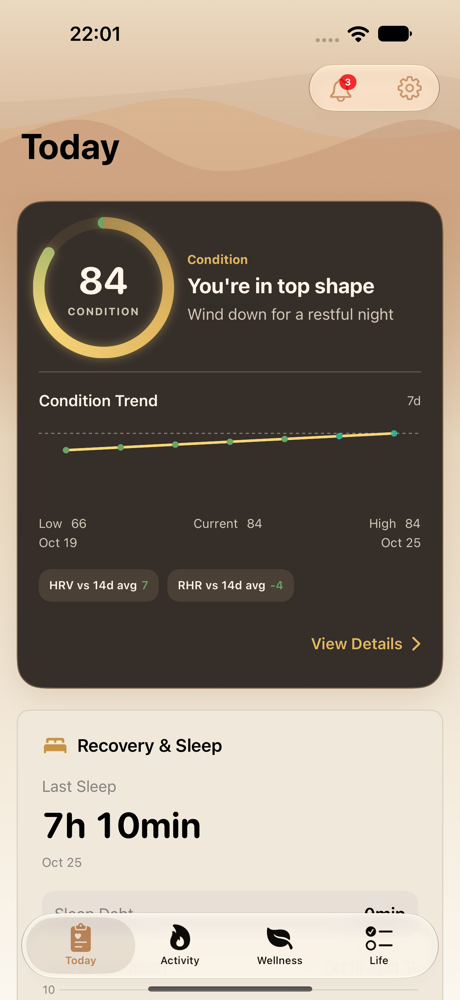
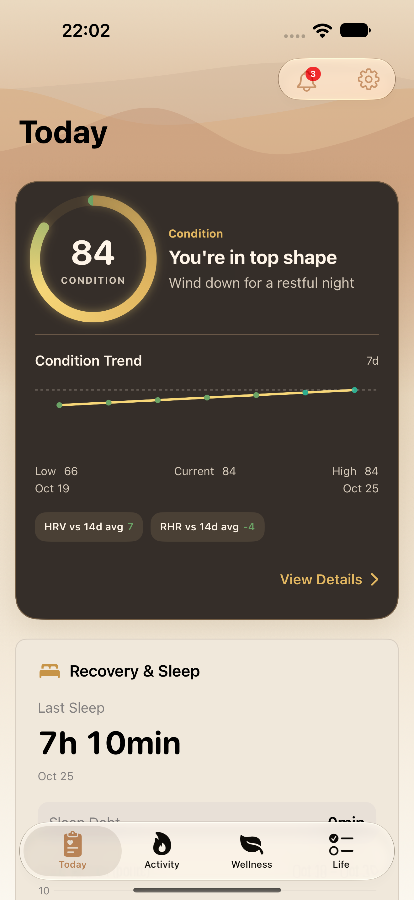
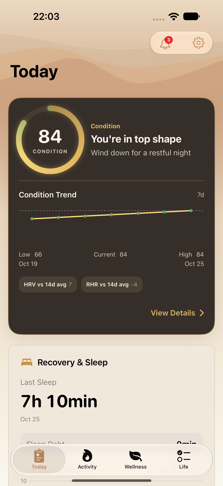
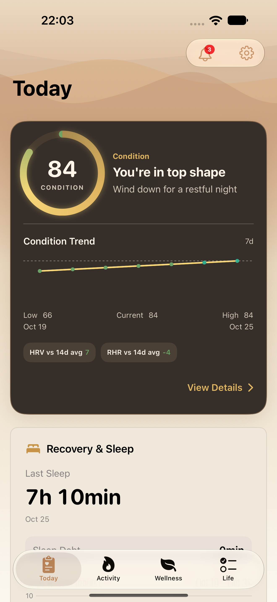
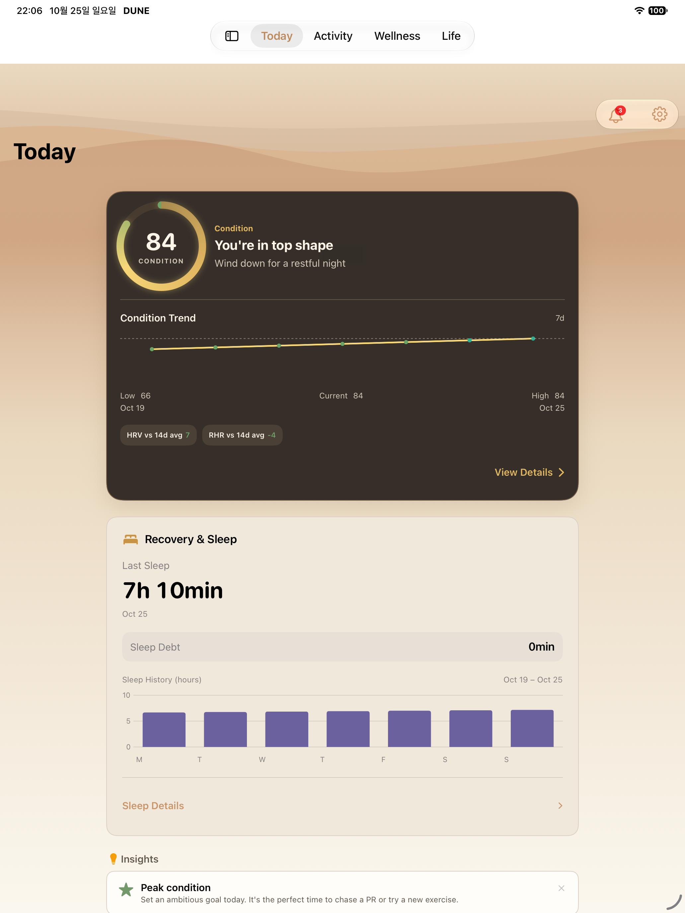
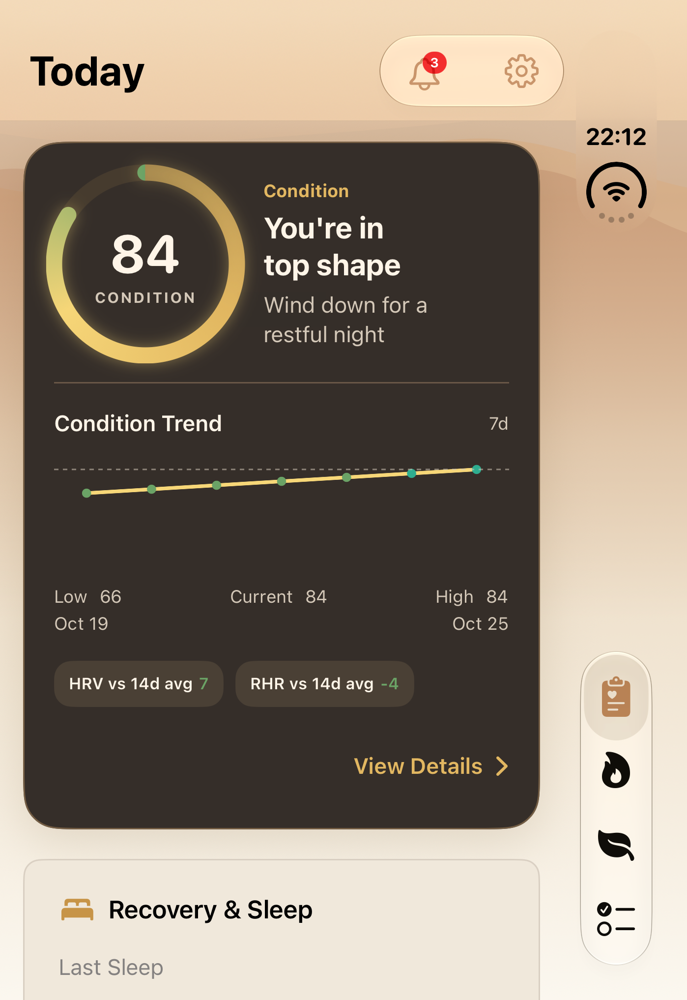
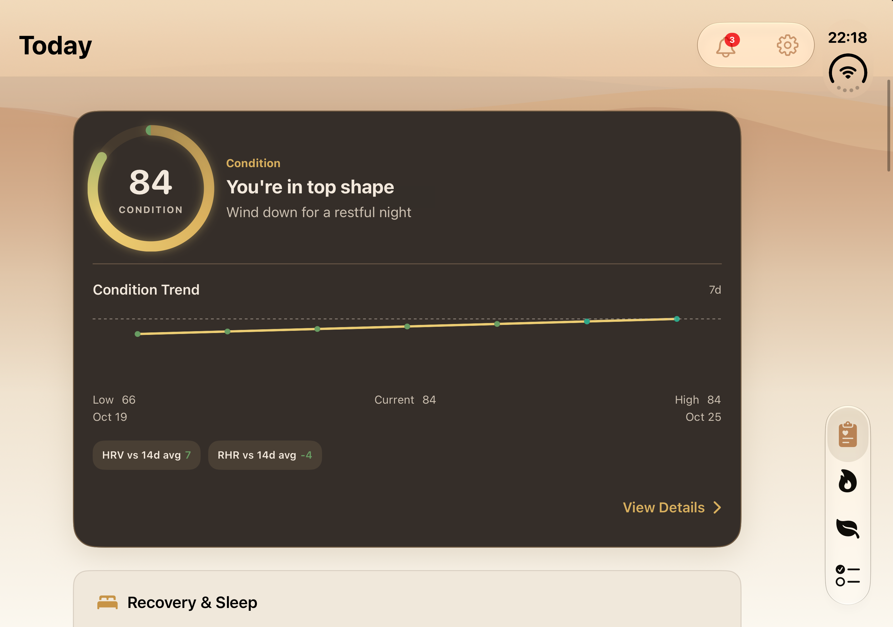

Today 스크롤 원인 수정 검증
2026-10-25 · inspector를 Today NavigationStack 밖으로 이동. 최신 main 통합 소스 ef42c58e · iPhone 10 / iPad 4 / Duo 접힘 2 / 펼침 2 선택 테스트 통과.
실제 PNG를 변형 없이 보존했다. Duo 펼침은 XCTest의 검은 첨부를 제외하고, 통과한 복귀 테스트를 1회 재실행하며 활성 내부 화면을 simctl로 직접 캡처했다. 기본 글씨·밝은 화면·고정 테스트 데이터 범위이며, 영상 전체의 모든 프레임이나 전체 제품 테스트 통과를 뜻하지 않는다.
캡처·소스·실행 출처 · 검증 상세

iphone · Today manual return initial
1320 × 2868 · XCTest 원본
iphone · Today manual return settled
1320 × 2868 · XCTest 원본
iphone · Today repeated full swipes settled
1320 × 2868 · XCTest 원본
iphone · Today native refresh completed without hold
1320 × 2868 · XCTest 원본
ipad · Today manual return settled
2064 × 2752 · XCTest 원본
duo-close · Today manual return settled
1398 × 2034 · XCTest 원본
duo-open · Today manual return settled
2853 × 2007 · simctl 활성 화면 원본